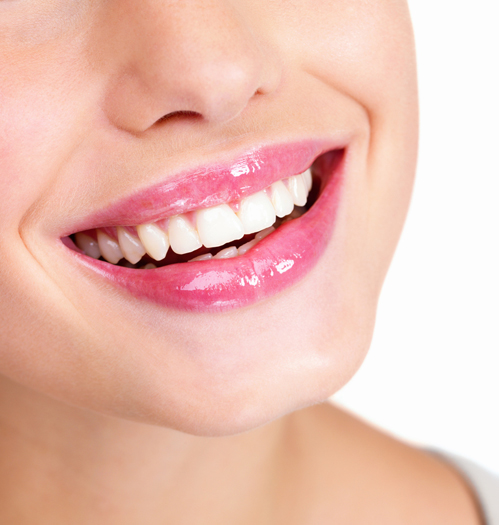
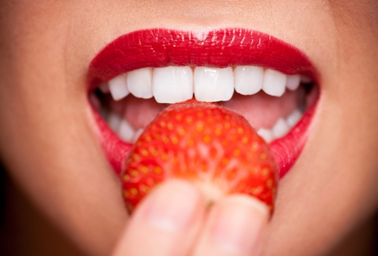
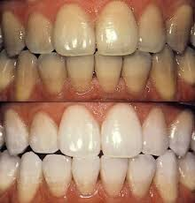

Отбеливание зубов
Привлекательная улыбка всегда является предметом человеческого внимания, а процедура отбеливания зубов в значительной степени может улучшить ее внешний вид. Под понятием "отбеливание зубов" принимают процесс, при котором в ходе химического окисления происходит изменение цвета дентина от темного до светлого.
На сегодняшний день идёт много споров среди врачей о безопасности и эффективности различных методов отбеливания, длительности сохранения эффекта после лечения. Могу сказать одно, не стоит бояться применять эстетические методы лечения для улучшения цвета зубов. Следует лишь помнить о том, что отбеливание имеет свои показания и противопоказании, а правильно подобрать препарат для отбеливания может только врач-стоматолог, так как им учитываются вид дисколорита, резистентность эмали и карисогенная ситуация в полости рта.
Что касается причин, то внешнее затемнение зубов происходит при употреблении человеком красящих ягод, фруктов и овощей, кофе, крепкого чая, красного вина, от табачного дыма при курении, от полоскания хлоргексидином и под действием различных производственных факторов. Зелёное окрашивание зубов наблюдается из-за наличия в зубном налёте гриба Licken clentalis, а чёрное - Bacteroides melaninogenicus и приёма препарата железа. Плохая гигиена полости рта, наличие брекетов на зубах также являются обстоятельствами, способствующими скоплению зубного налёта на поверхности зубов, результатом чего может стать их окрашивание.
Также существуют внутренние пятна, которые возникают в результате болезней, протекающих в период фолликулярного развития твёрдых тканей зубов или после их прорезывания. К наиболее распространённым некариозным поражениям относится флюороз, гипоплазия эмали зубов, "тетрациклиновые" зубы, несовершенный амелогенез, несовершенный дентиногенез. Все эти причины есть показания к отбеливанию зубов.
Противопоказано отбеливание зубов в случаях когда:
- пациент с множественными пломбами, трещинами на зубах, оголёнными шейками, клиновидные дефекты и повышенной чувствительностью зубов;
- несанированная полость рта (вторичный кариес, воспалительные заболевания пародонта в стадии обострения);
- пациент проходит ортодонтическое лечение;
- присутствует аллергическая реакция на отбеливающий препарат;
- есть недостаток эмали в результате патологической или возрастной стираемости зубов;
- возраст пациента до 16-18 лет;
- пациент беременна или вскармливает грудью.
Людям с такими противопоказаниями рекомендуется процедура осветления зубов, которая заключается в восстановлении естественного цвета зубов за счёт удаления пелликулы и окрашенного зубного налёта.
Все методы отбеливания можно разделить на профессиональные, осуществляемые непосредственно врачом-стоматологом в условиях стоматологического кабинета, и домашние, которые пациент может применять самостоятельно или под контролем специалиста. Методы и способы отбеливания зубов мы рассмотрим дальше.
Рекомендуемые записи:
Отбеливающие полоскиЧитать Домашнее отбеливаниеЧитать Профессиональное отбеливаниеЧитатьРекомендуемое видео:
Косметическая стоматология